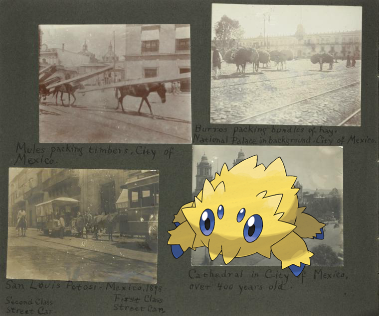

Pokémon in the NYPL archives
2018-3-25 08:10:04

Joltik |
Mules packing timbers, City of Mexico; Burros packing bundles of hay. National Palace in background, City of Mexico; San Luis Potosi, Mexico, 1898. Second class street car, first class street car; Cathedral in City of Mexico, over 400 years old.
.